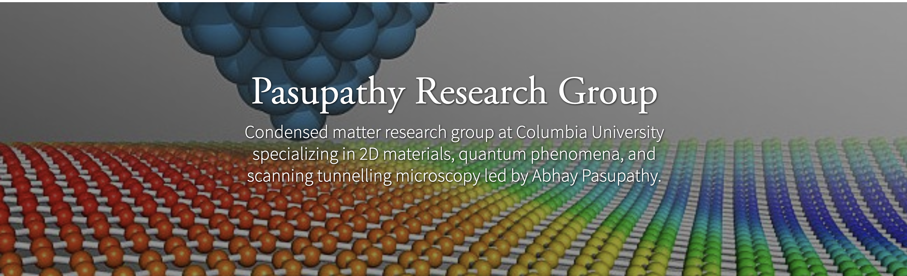
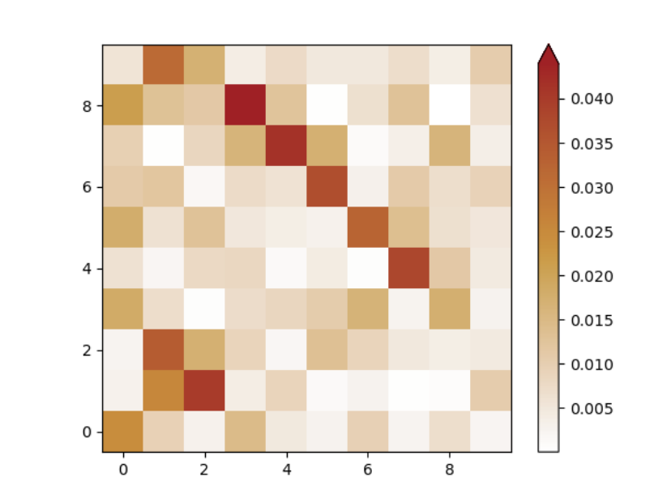
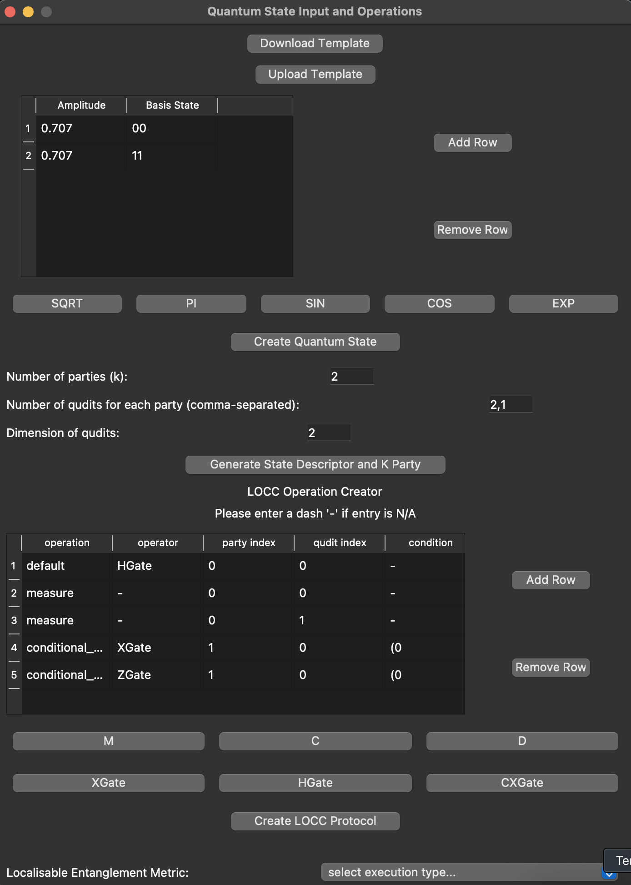
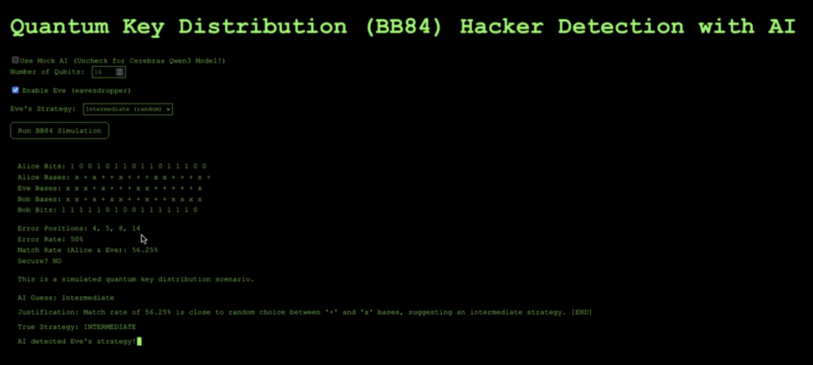
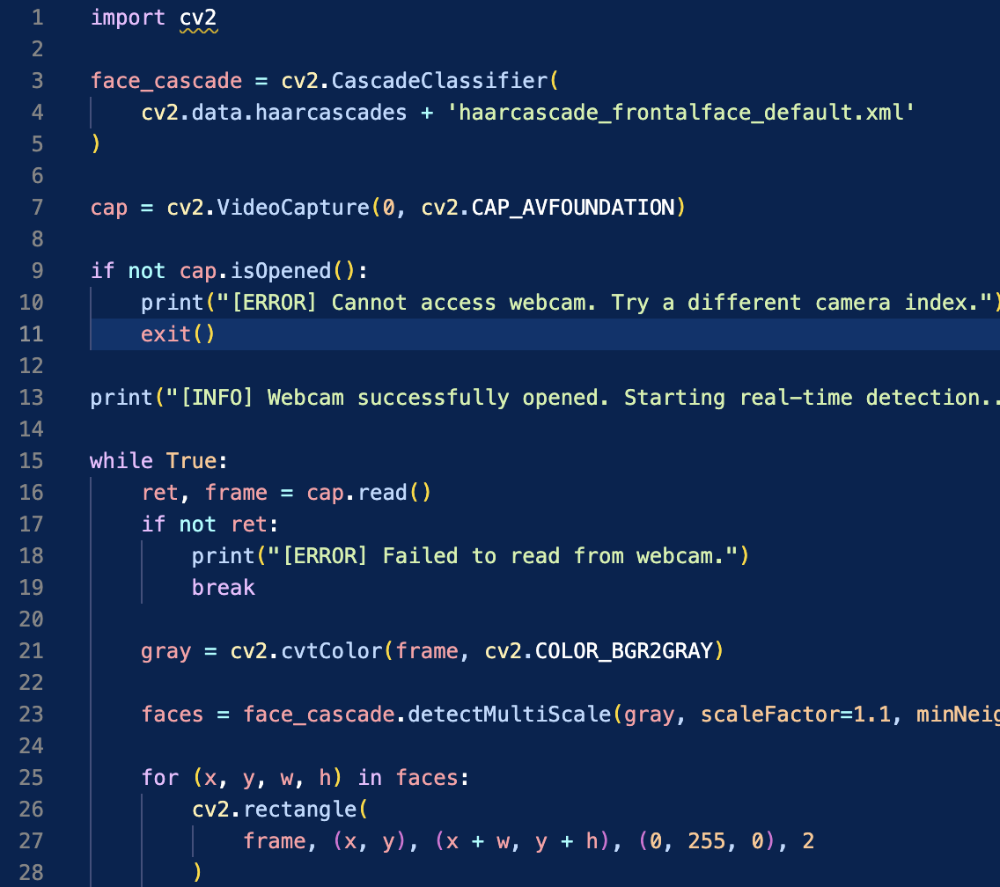
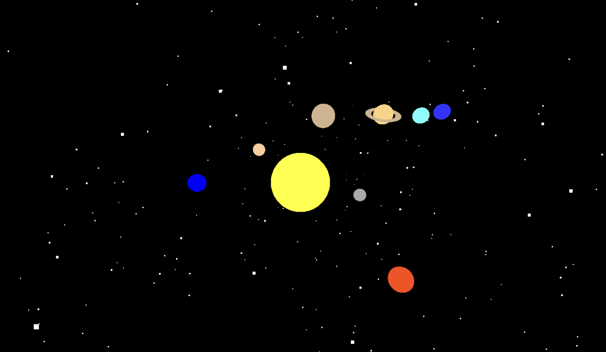
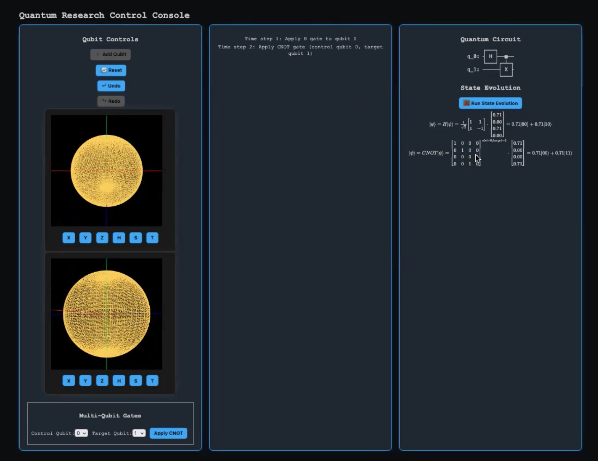
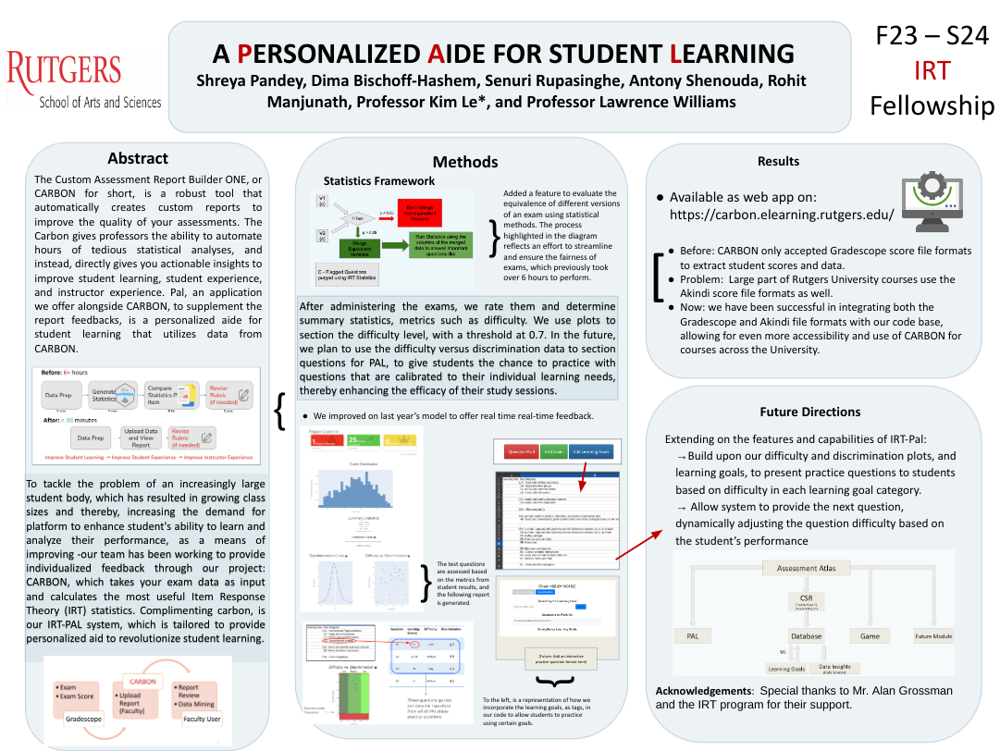
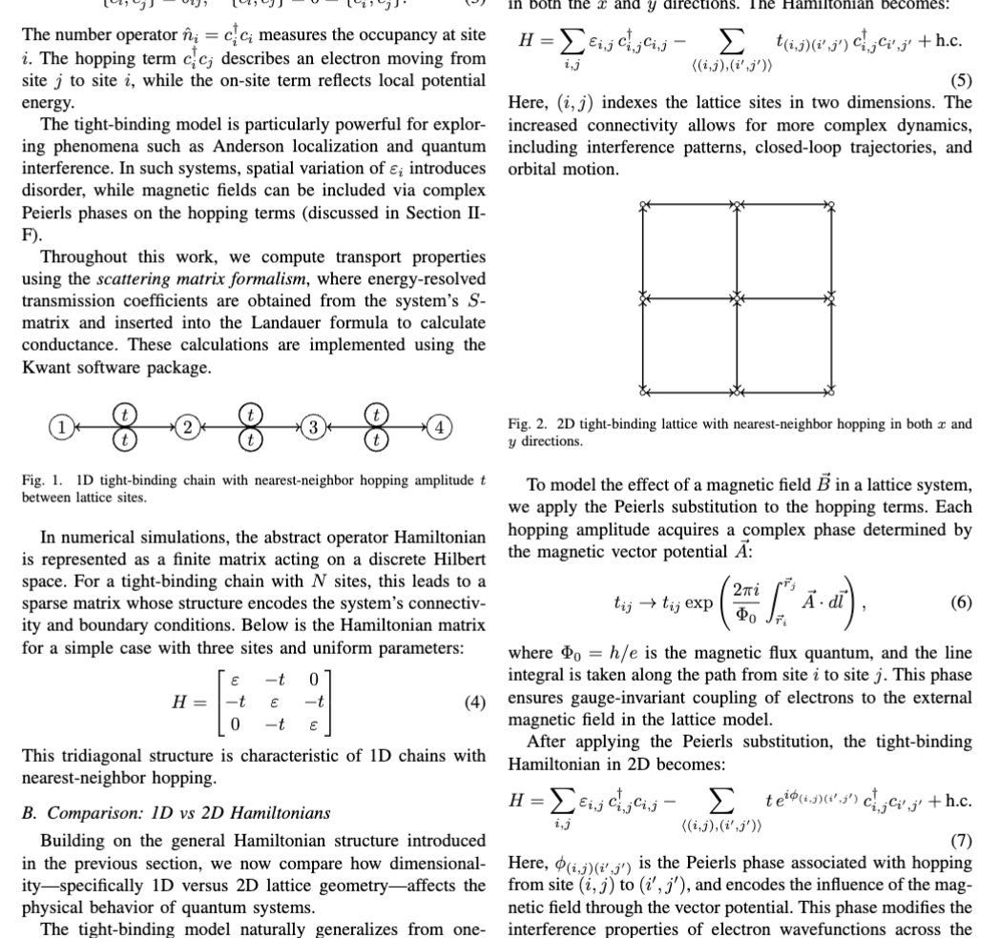
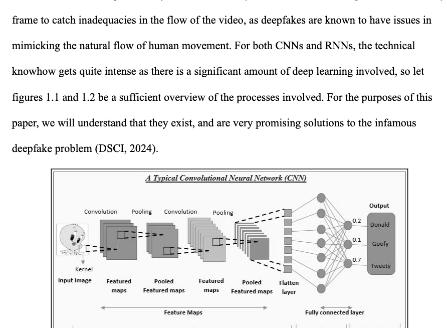

Research systems, engineering tools, and scientific writing.

Hands-on experimental work with NV-center quantum sensing.

Modeling conductance in tight-binding systems under disorder and magnetic fields.

A GUI and animation system for constructing LOCC protocols and visualizing entanglement evolution.

A playful quantum key distribution simulator with AI-assisted eavesdropper inference.

A beginner computer vision project exploring real-time detection and recognition pipelines.

A browser-based 3D solar system built with Three.js.

An interactive learning and visualization tool for quantum circuits and state evolution.

A production-grade academic automation system with measurable impact.

Paper concerning the technical details of my quantum transport simulation tool.
Research Writing · Quantum Systems

Ethical and technical analysis of synthetic media systems.
Research Writing · Ethics · AI Systems